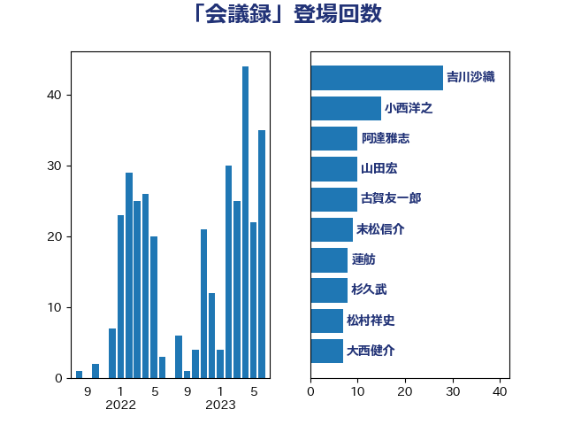

単語「会議録」

| 吉川沙織 | 立憲民主党 | 28 回 |
| 小西洋之 | 立憲民主党 | 15 回 |
| 阿達雅志 | 自由民主党 | 10 回 |
| 山田宏 | 自由民主党 | 10 回 |
| 古賀友一郎 | 自由民主党 | 10 回 |
| 末松信介 | 自由民主党 | 9 回 |
| 蓮舫 | 立憲民主党 | 8 回 |
| 杉久武 | 公明党 | 8 回 |
| 松村祥史 | 自由民主党 | 7 回 |
| 大西健介 | 立憲民主党 | 7 回 |
| 佐藤信秋 | 自由民主党 | 7 回 |
| 馬場成志 | 自由民主党 | 6 回 |
| 酒井庸行 | 自由民主党 | 6 回 |
| 豊田俊郎 | 自由民主党 | 6 回 |
| 宮本岳志 | 日本共産党 | 6 回 |
| 高橋克法 | 自由民主党 | 5 回 |
| 田中良生 | 自由民主党 | 5 回 |
| 大野敬太郎 | 自由民主党 | 5 回 |
| 鶴保庸介 | 自由民主党 | 4 回 |
| 葉梨康弘 | 自由民主党 | 4 回 |
| 福重隆浩 | 公明党 | 4 回 |
| 石橋通宏 | 立憲民主党 | 4 回 |
| 林芳正 | 自由民主党 | 4 回 |
| 山本順三 | 自由民主党 | 4 回 |
| 小林鷹之 | 自由民主党 | 4 回 |
| 中山展宏 | 自由民主党 | 4 回 |
| 鷲尾英一郎 | 自由民主党 | 3 回 |
| 青山周平 | 自由民主党 | 3 回 |
| 長谷川岳 | 自由民主党 | 3 回 |
| 谷田川元 | 立憲民主党 | 3 回 |
| 西村康稔 | 自由民主党 | 3 回 |
| 細田博之 | 自由民主党 | 3 回 |
| 福岡資麿 | 自由民主党 | 3 回 |
| 浜田靖一 | 自由民主党 | 3 回 |
| 根本匠 | 自由民主党 | 3 回 |
| 斎藤嘉隆 | 立憲民主党 | 3 回 |
| 山下芳生 | 日本共産党 | 3 回 |
| 小沢雅仁 | 立憲民主党 | 3 回 |
| 堀井学 | 自由民主党 | 3 回 |
| 音喜多駿 | 日本維新の会 | 2 回 |
| 赤羽一嘉 | 公明党 | 2 回 |
| 西田実仁 | 公明党 | 2 回 |
| 稲津久 | 公明党 | 2 回 |
| 石井準一 | 自由民主党 | 2 回 |
| 田村智子 | 日本共産党 | 2 回 |
| 牧島かれん | 自由民主党 | 2 回 |
| 牧原秀樹 | 自由民主党 | 2 回 |
| 熊谷裕人 | 立憲民主党 | 2 回 |
| 熊田裕通 | 自由民主党 | 2 回 |
| 松沢成文 | 日本維新の会 | 2 回 |
| 斉藤鉄夫 | 公明党 | 2 回 |
| 平口洋 | 自由民主党 | 2 回 |
| 島尻安伊子 | 自由民主党 | 2 回 |
| 塚田一郎 | 自由民主党 | 2 回 |
| 古川俊治 | 自由民主党 | 2 回 |
| 佐々木さやか | 公明党 | 2 回 |
| 今枝宗一郎 | 自由民主党 | 2 回 |
| 中谷真一 | 自由民主党 | 2 回 |
| 上野賢一郎 | 自由民主党 | 2 回 |
| 三谷英弘 | 自由民主党 | 2 回 |
| 齋藤健 | 自由民主党 | 1 回 |
| 高木毅 | 自由民主党 | 1 回 |
| 青木愛 | 立憲民主党 | 1 回 |
| 青木一彦 | 自由民主党 | 1 回 |
| 赤池誠章 | 自由民主党 | 1 回 |
| 西村明宏 | 自由民主党 | 1 回 |
| 萩生田光一 | 自由民主党 | 1 回 |
| 笠浩史 | 無所属 | 1 回 |
| 竹内譲 | 公明党 | 1 回 |
| 矢倉克夫 | 公明党 | 1 回 |
| 田島麻衣子 | 立憲民主党 | 1 回 |
| 滝沢求 | 自由民主党 | 1 回 |
| 浜野喜史 | 国民民主党 | 1 回 |
| 浜田聡 | NHK党 | 1 回 |
| 河野義博 | 公明党 | 1 回 |
| 永岡桂子 | 自由民主党 | 1 回 |
| 森屋宏 | 自由民主党 | 1 回 |
| 柿沢未途 | 無所属 | 1 回 |
| 本村伸子 | 日本共産党 | 1 回 |
| 有村治子 | 自由民主党 | 1 回 |
| 徳永エリ | 立憲民主党 | 1 回 |
| 平木大作 | 公明党 | 1 回 |
| 川田龍平 | 立憲民主党 | 1 回 |
| 山口俊一 | 自由民主党 | 1 回 |
| 大西英男 | 自由民主党 | 1 回 |
| 大串博志 | 立憲民主党 | 1 回 |
| 和田政宗 | 自由民主党 | 1 回 |
| 古賀之士 | 立憲民主党 | 1 回 |
| 古川禎久 | 自由民主党 | 1 回 |
| 古屋範子 | 公明党 | 1 回 |
| 原口一博 | 立憲民主党 | 1 回 |
| 伊藤岳 | 日本共産党 | 1 回 |
| 三原じゅん子 | 自由民主党 | 1 回 |
| 三ッ林裕巳 | 自由民主党 | 1 回 |
| おおつき紅葉 | 立憲民主党 | 1 回 |